WomanInc
Overview
For one of our bootcamp projects, my team and I browsed through a variety of non-profit organizations to redesign. As I was in a team of all males aside from myself, my teammates were intrigued when we came across WomanInc, a website dedicated to help women in domestic abuse situations.
For our project, we proposed to redesign the layout of key web pages based on findings through our user tests. We restructured the information architecture and hierarchy after rounds of card sorting and design testing. The overall goal from our project was to achieve a design that would help women navigate smoothly through Womaninc.org.
Deliverables
Methods
Interviews, surveys, affinity mapping, competitor analyses, user testing, wireframing, prototyping
Tools
Quip, Mural, Figma, Adobe XD, Slack, Zoom
User Research
As we browsed through the WomanInc website, we developed an objective for our team to reach as our project goal:
Redesign the WomanInc website with a Get-In-Get-Out approach that would provide women with a focused journey and experience to minimize the amount of time spent on the site in the case that their safety is compromised.
With our objective written, we created a proto persona to guide us into finding the proper questions and candidates for interviews.
User Insight
Through our interviews, we discovered that users were having difficulty accessing information due to the lack of typographic hierarchy and organization of information. We also had a lot of positive feedback on the emergency exit button on the website.
With our interview findings, we created a user persona.
User Persona
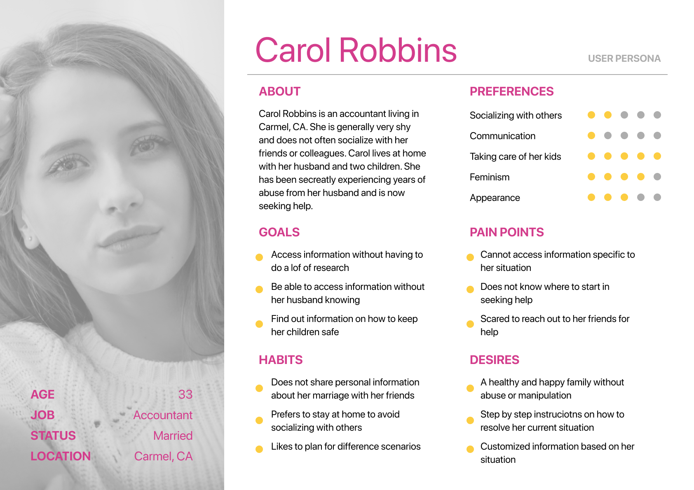To start determining proper elements to include on our website redesign, we constructed both direct and indirect competitor analyses as a group and discussed what we believed to be important to include and what was unnecessary.
Competitor Analysis
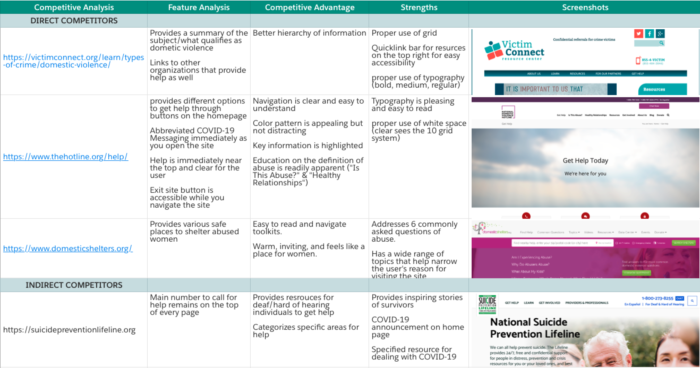Problem Statement
How might we redesign the current WomanInc webpage to allow users in need of information about abuse to effectively find out information measured by the time spent browsing the webpage, number of repeat visits, and number of clicks through each page?
Ideation
To properly prioritize the most important features, we created an affinity map and conducted multiple rounds of card sorting.
Card Sorting
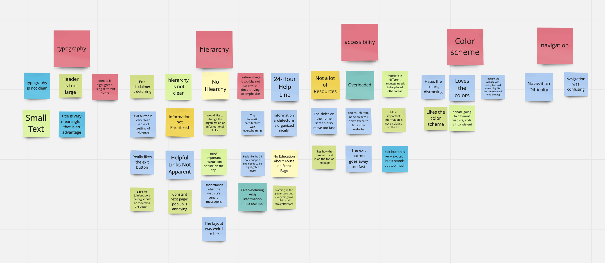These card sorting rounds guided us on how the navigation bar should be set and determined the importance of each category. As we did these card sorting exercises, we referenced similar websites to make sure that we were heading towards the right direction. Along with looking at other websites, we also conducted a heuristic evaluation on the original website to explore the positive and negative factors of the webpage.
During our ideation phase, we also created a mood board to help us decide on our color palette. We wanted to create a color scheme that was inviting and made users feel at ease.
Finally after multiple discussions on information categorization and potential color schemes, we built out a user flow that a potential user would follow.
User Flow
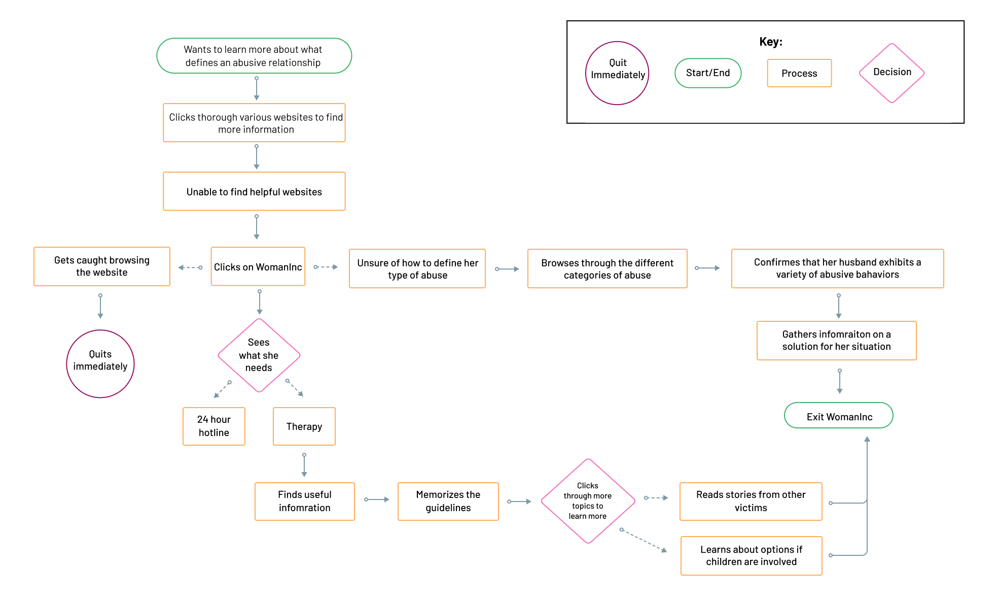After our user flow was solidified, we decided to work separately on initial sketches that we would later discuss on as a group. We pulled the strong points of each others’ sketches which gave us a base to build our final layout off of.
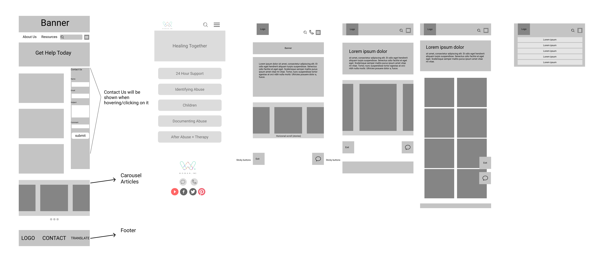UI Branding
As a team, we wanted to create a bright, warm, and welcoming palette for our users. As most users visiting our page may already be in a stressful situation, we wanted to be able to create a safe and welcoming space.
Style Tile
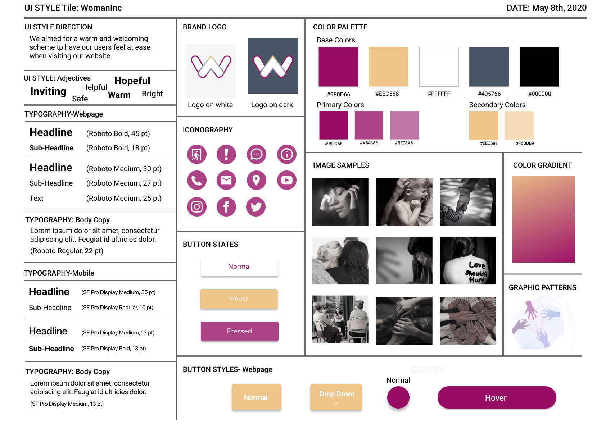Lofi Prototype
As we were aiming to produce both a mobile and desktop view of the WomanInc website, we started off our lofi wireframes in a mobile view to ensure that we were able to fit in all the needed information. We then expanded to the webpage browser size after our mobile was complete.
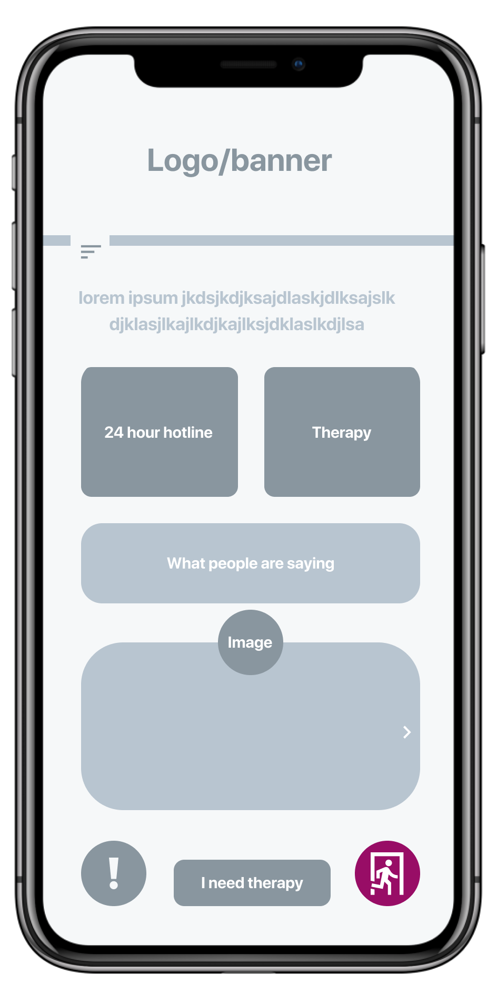
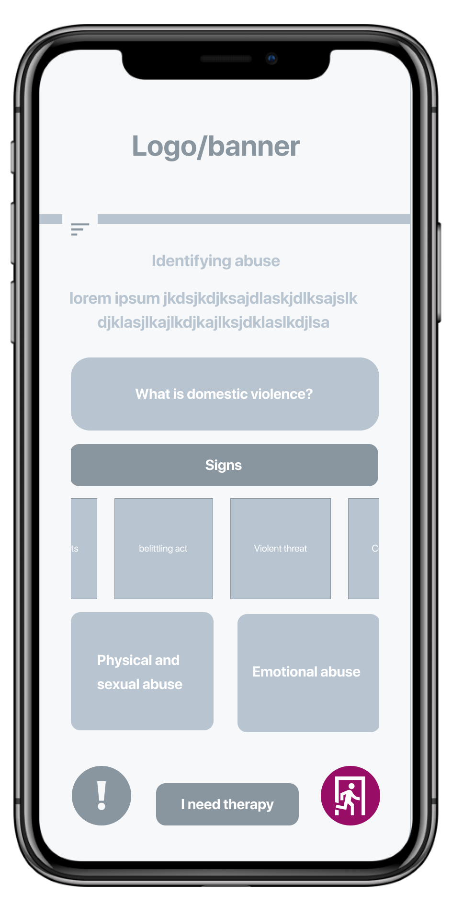
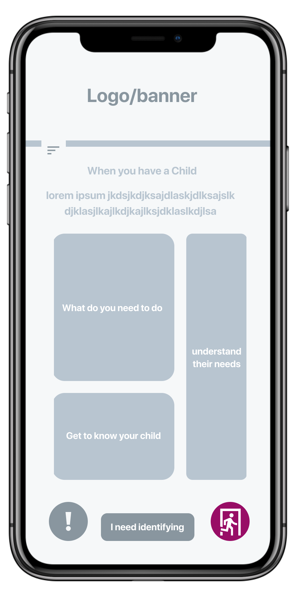
Iteration
From our user tests on our lofi prototype, we noted to iterate on the following comments:
Final Prototype
With the final changes from our user testing feedback, we created our final prototype.
Desktop View
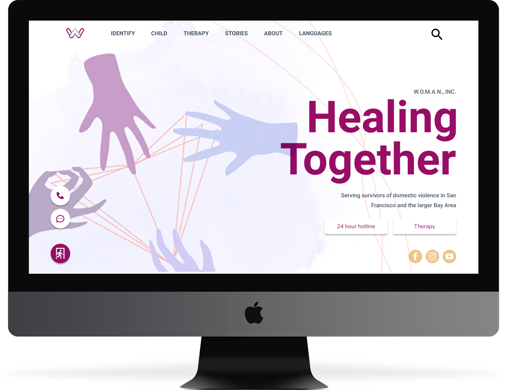
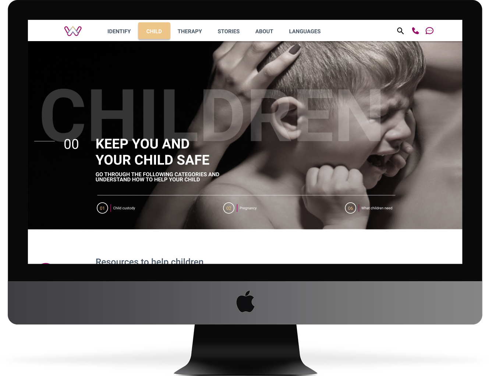

Mobile View
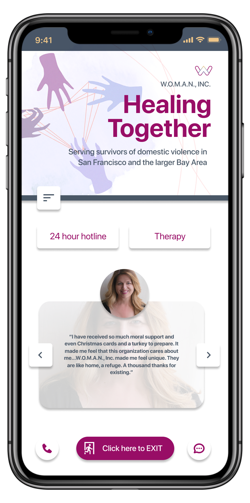
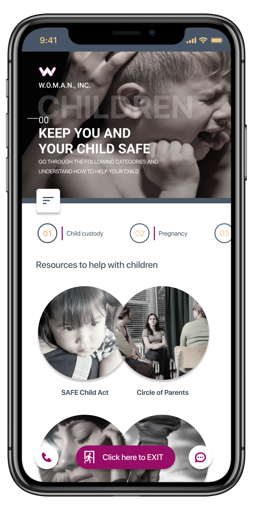
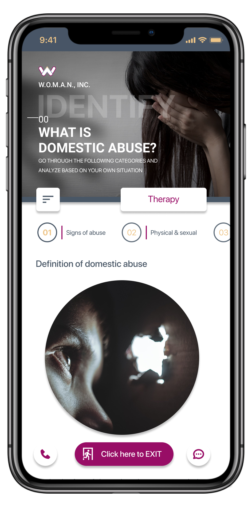